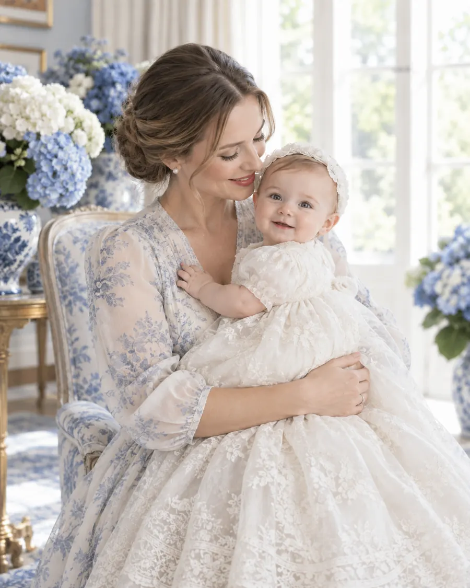
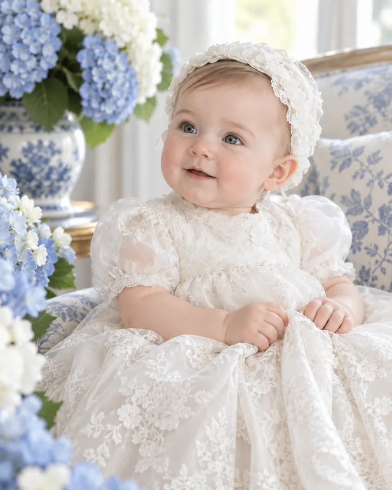

El día que Olivia recibe su bautizo, y nosotros el mejor de los regalos.
20
MARZO2027SÁBADO


El mismo ropón que usó su mamá hace treinta años.
La ceremonia
Todo lo que necesitas saber
Hora
12:00 del díaTe pedimos llegar 15 minutos antes
Iglesia
Templo del CarmenAv. Revolución 4, San Ángel, CDMX
Comida
Casa San ÁngelAmargura 17, San Ángel, CDMX
Vestimenta
Formal claroEl azul porcelana es bienvenido
Con la bendición de
Sus papás
Patricio Lombardo Rangel
Victoria Iturbe de Lombardo
Sus padrinos
Emilio Iturbe Cano
Renata Lombardo Rangel
Confirmación
¿Nos acompañas?
Con tu confirmación apartamos tu lugar en la comida.
 Hecho por Savey
Hecho por Savey